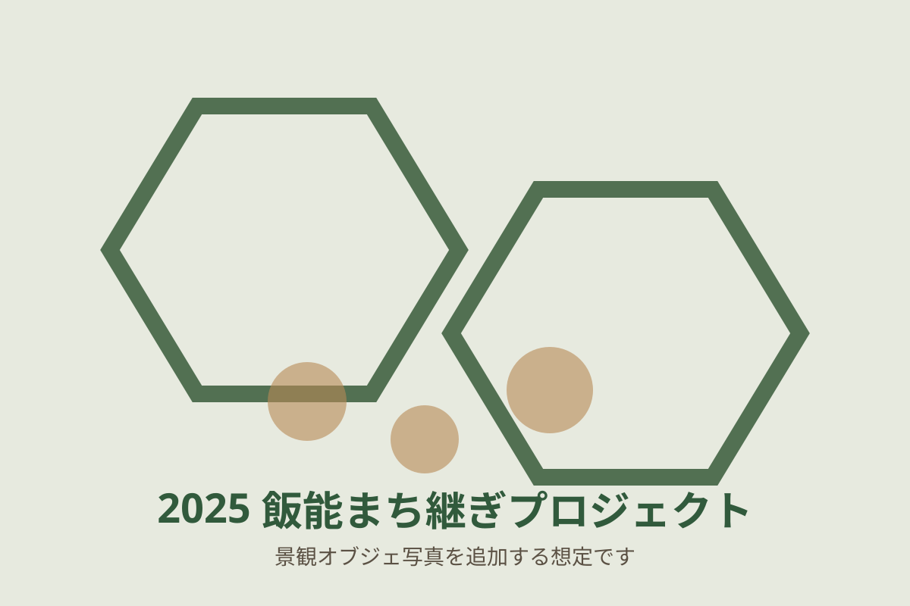

木
地域資源に触れる
西川材を使った薪割り・釘打ち・のこぎり・棚づくりを通じて、森林文化を身近に感じる機会をつくります。
市民参加の体験から、地域の記憶を読み取るインタビュー、まちなかでの検証までを一つの流れとして実施しています。
西川材を使った薪割り・釘打ち・のこぎり・棚づくりを通じて、森林文化を身近に感じる機会をつくります。
商店主へのインタビューから、お店の歴史、日々のこだわり、商店街の記憶を丁寧に掘り起こします。
地域の素材と語りを景観オブジェに表現し、商店街に設置。人の行動や景観の印象を調査します。
試作版では、2025年度の主要な活動成果を掲載しています。今後、分析結果や報告書へのリンクを追加できます。

2025年度は、西川材と飯能大島紬の六角形模様を組み合わせた「つなぐ窓」を制作しました。窓の内側には、インタビューで伺った店舗ごとの記憶や想いを表現しています。
オブジェ紹介へ「薪をまちなかに見せる」実践から、「人々の記憶や想いをまちなかに表す」実践へ。活動のテーマを発展させてきました。
地域の方々とつくった薪を、飯能銀座商店街24か所に設置。森林文化を感じる景観を生み出しました。
商店主の言葉や記憶を景観オブジェに表現し、20店舗に設置。地域らしさの感じ方と人の行動を調査しました。